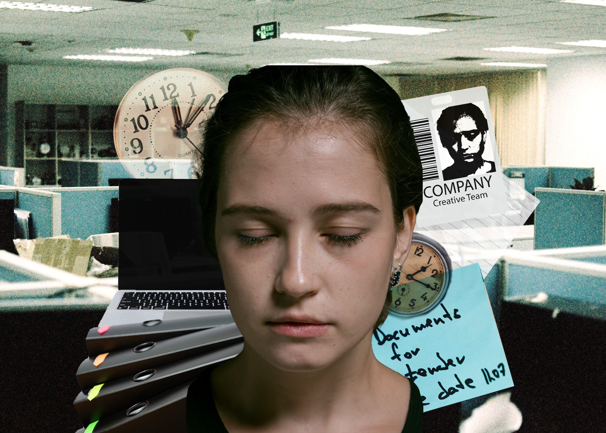
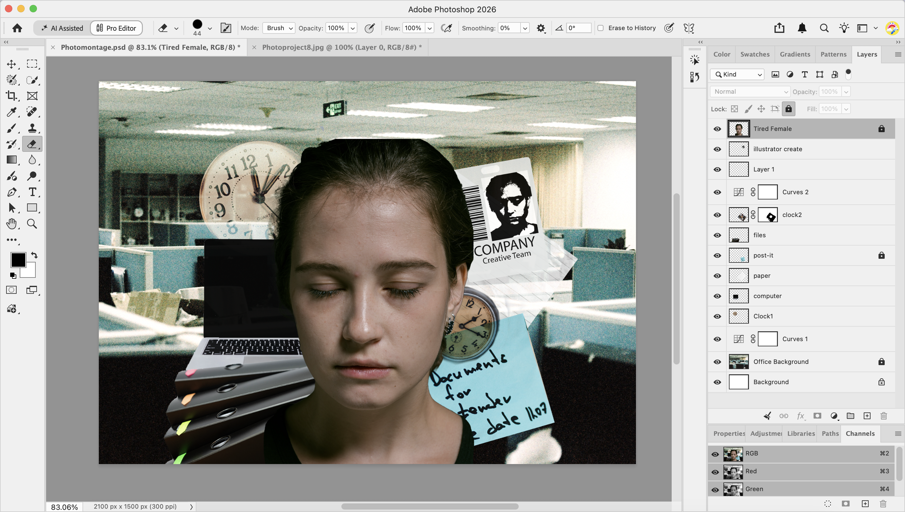

Work-Life Balance

Layers Panel
The social concept I choose for my photomontage is the hard balance of corporate life. Many people have a difficult work- life balance and in this design I tried to incorporate many aspects of worklife. I used pexels photo domain to find all the license free photos that are in my photomontage. I search with key words and choose pictures that have an easy to detect background so I can easily remove them in photoshop. I used Public Domain Pictures.net for images that were harder to find since this site had very good patterned images. The tool that I explored with the most in my photomontage was the object selection tool. This was easy to use and control which allowed me to select and delete what I wanted. I used the curves adjustment layer to change how my background photo looks by changing its RGB properties. Next I went onto the pictures of objects on my photomontage. I have experimented with the layers opacity and the layers blending mode. I chose a blend mode screen for the clock in the background which gave the clock a faded kind of look. For the paper layer I choose to use the lighten blend mode since the original images were too bright for the scene. I tried to use the layer masking technique on my second clock.The overall mood I was aiming for was a more deep and dark office vibe which I think I somewhat tried to create. At last I changed the color adjacent for the background and the object images again so that they would not turn out too bright.